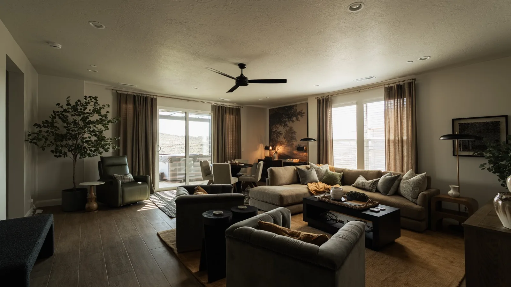
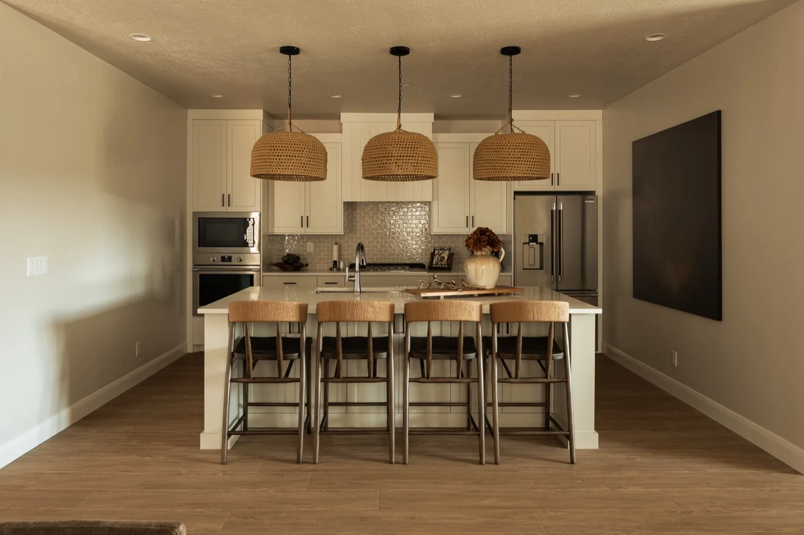
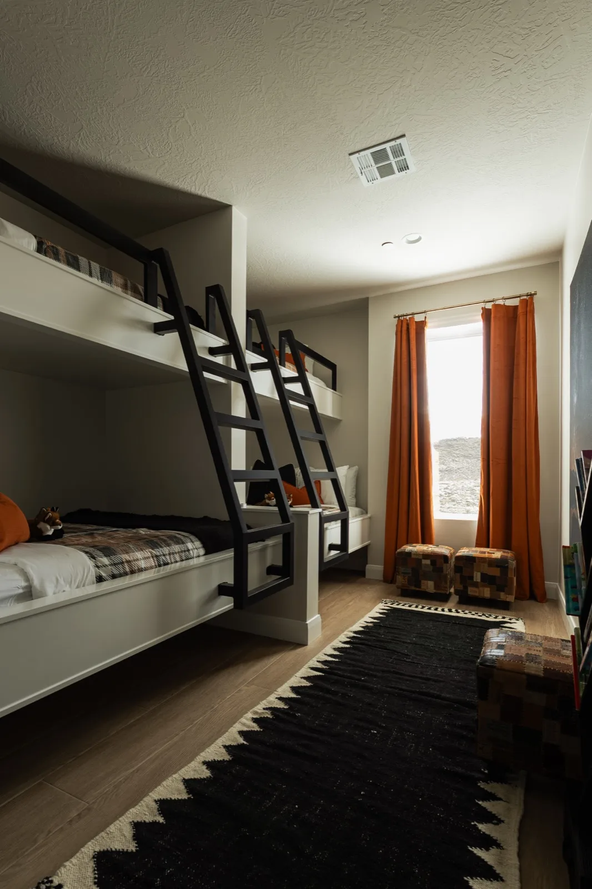
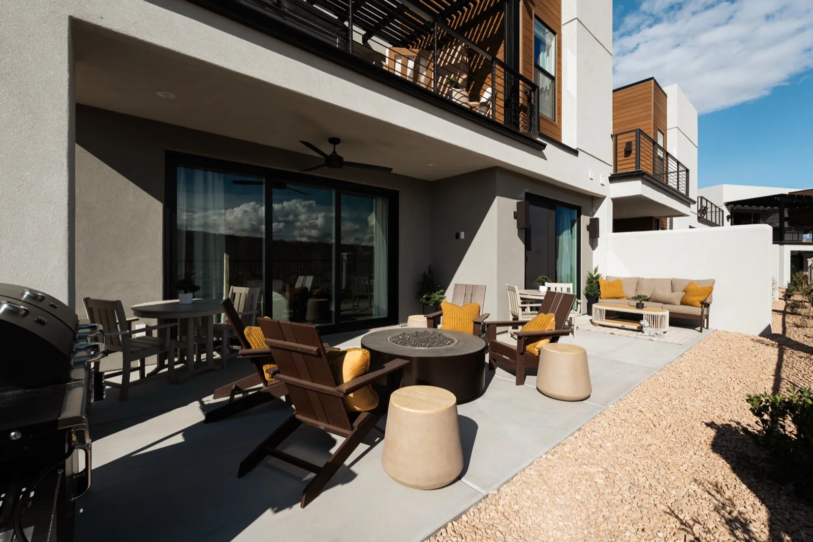

A Cohesive Visual Identity
Warm neutrals, rust, olive, black, and natural texture repeat across rooms without making every space feel identical.

Vacation rental project · Working title
A warm, layered large-group rental carried from complete design planning through procurement, installation, and guest-ready styling.
This is the first template prototype. Public project name, exact location, bedroom count, guest capacity, completion date, client-approved quote, and any performance results still need confirmation before publishing.
The project
The Hyer property called for a cohesive experience across roughly ten rooms, from shared gathering areas and a hardworking kitchen to distinctive bedrooms and outdoor spaces. The design needed enough personality to photograph clearly while still feeling comfortable to a full house of guests.
The work extended far beyond furniture selection. 1584 Design coordinated hundreds of individual pieces, tracked procurement and deliveries, built layers of lighting, textiles, art, and accessories, and installed the property as one finished composition.



Design strategy
These are provisional editorial themes based on the current image set and project records. Lisa’s project interview will supply the final reasoning and details.
Warm neutrals, rust, olive, black, and natural texture repeat across rooms without making every space feel identical.
Distinctive bedrooms and layered details create individual moments that strengthen both the listing gallery and the stay.
Living, dining, kitchen, and outdoor areas are treated as the center of a group experience rather than leftover circulation space.
Outcome
The completed property was delivered as a fully composed environment, with furnishings, styling, kitchen stocking, and final placement handled as part of the installation.
Verified booking, revenue, occupancy, and review outcomes have not yet been added. Until those are available and approved, this case study will focus on scope, strategy, execution, and the client’s experience.
Your project
Tell us about the property, guest profile, timeline, and intended scope. We will assess whether it is a strong fit for our full-service process.